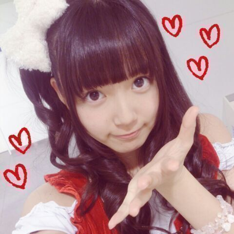

| 2013/12 16 Mon | ひめたん(*>ω<*)そ の381 |
今日は千葉個握でした！
来てくださったみなさん
本当にありがとーうございました＊
ひめたんはサンタさんになりました！
フライングサンタさん┐( ∵ )┌げっと
４部 サンタ帽 × 巻きおろし
５部 ひめたんりぼん × ひめたん結び
写めは５部！

ほれほれエア握手会やってんぞ！
４部はもっこもっこした
白いやつを羽織ってたんだけど
サンタ服あんま見えてなかったらごめんねー
５部はちょっとだーけ
せくしーひめたんでした♪♪
それで！
本当にたくさんの方が来てくださって！
寒いなか 長い時間お待たせしちゃって
みなさんごめんなさいね(´；ω；｀)
ひめたんはとっても嬉しかったですっ
はじめましての方が
いっぱーいいらっしゃった！
よく会いにきてくれましたーありがとう( ^O^ )
初握手はどうでしたかー？
楽しかったーって思ってくださったら嬉しいな
感想ぜひ聞かせてね♪♪
お久しぶりの方も
一週間ぶりの方も
仲良くしてくれてありがとーう！
いつもの私服じゃなくてサンタ服は
新鮮だった......よね？
ひめたんサンタさんは今日限定だよー///
武道館ライブの話題が多かった気がする。
行くよーとかいけないよーとか
席が近いよー遠いよーとか
いろいろ教えてくださってありがと！
行くって方は
ひめたんタオルとかピンクサイリウムとか
ひめたんTシャツとか着ちゃったりして
ひめきゅん満喫してってね☆
行けないって方は
ブログでレポ書くから待ってて！
お仕事とかお勉強とか応援してますっ
あーそれから
コメントでも握手会でも
受験生さんがたくさんいらっしゃる
受験生のみなさーんっ
ひめたんは全力で応援してますよー(｀・ω・´)
いよいよラストスパートとゆーことで
体調には気をつけて、
しっかり寝るようにしてくださいね。
今日も寒かったから
いっぱいお風呂つかって
あったまってから寝るんだよー＊

川後Pに捕獲されるの図

 理科のテストで46点をとってしまいました(泣)
理科のテストで46点をとってしまいました(泣)
慰めてー！
ないすふぁいつ！
狙って取れるもんじゃありません！
その調子で行きましょう！
ひめたんが本気で怒るとどーなる？？
まず争いを避けて通るタイプなので
そんなに本気で怒ることもないけど
そうだなー本気で怒ったら
無になります( ´ ▽ ` )ぺろ
ひめたんが黙ったら察してくださいねーっと
 とりりーぬさんって、、
とりりーぬさんって、、
美味しいですかね？ヨダレ
やめてください
こう見えても肉付きはよくないので
ってか鶏じゃなくてひよこなのでやめてください。
ひめたんってすべったことある？
あ、ひめたんびーむですべったのは除いてね！！笑
何だその
ひめたんびーむはスベるんでしょみたいな前提は！
そらそーだけど！しーんってなるけどさ！
ひめたんびーむしなくても
ひめたんが何か言ったらしーんってなること
ちょいちょいありますよそら！
別に笑いを誘いたくて発言するようなこと
ひめたんはしないんだから！
ぷーんだ！！
...で 「とりりーぬ」は
ウチの母親と同じ名前なんです...
偶然ですね。有難い事です。...
ごめんなさいね
別に質問じゃないのになんか拾っちゃった
あの、奇遇ですね！
ひめたんびっくりしちゃった！
それは とりりーぬさん(絵)も
喜んでると思いますよ！
同姓同名さんに会うのはじめてなんじゃないかな！
ひめたんビームを鏡に反射したらどうなる???
この質問多い！
みんな気になるのかな？
毎記事見る気がするー
じゃあこの際だからはっきりさせましょうね
えーと、まず鏡が割れるんじゃないかな( ´ω` )
いつの間にか
ひめたんのブログが更新されてるのをみると
テンションが上がるようになってた！
立派なひめきゅん？これって
それはもうっ立派なひめきゅんさんだよー
ありがとー(〃ω〃)
ひめたんと牛タンの違いがわかんないんだけど
説明してもらえる？
えーっと、あなた疲れてる？
名前が似てるからって
あんまりノリでそーゆーこと言っちゃだめよ？ね？
触角ってどこから出てくるんですか？
頭です。もう一度言います頭です。
ひめたんビームって、
クリスマスケーキを均等割りできますか？(笑)
ねーもう遊んでるでしょ(笑)
(笑)ゆーてますやん(笑)
絶対無理ってわかってて聞いてるでしょ(笑)
最近そーゆー風潮あるの気づいてるからね(笑)
で何？ケーキを分割？
そんなん決まってるじゃないですか。できますよ
ひめたんのブログの
コメント欄下２ケタに46を踏んだ方へ
手書きでコメ返するコーナー
＼ ひめたん46 ／

このあとの乃木どこも観てね☆
大食い対決！
って記事書いたまま寝てたああぁあ
あーもーほんとに悔しい(´；；｀)
更新待っててくださったみなさん
ほんとにごめんなさいね
ひめたんこーゆーとこあるのよー
ほんとにいけませんねー悔しい悔しい悔しいー
みなさんのおすすめの
ごはんのおともってありますかー？＊
( ・Θ・ )
｜ ｜
コメント(475)
2013/12/16 00:30